Annexes
Annexe A — Modèle théorique simplifié
Parallèlement au développement du modèle de la colonne sous Fluent, une approche théorique simple a été développée afin d'estimer la température liquide en sortie de colonne.
La partie A.1 décrit une approche théorique considérant les phases parfaitement mélangées au niveau de la colonne. La partie A.2 est basée sur une discrétisation de la colonne en tranche suivant z (côte de la colonne).
A.1 Approche théorique – Phases parfaitement mélangées
On considère la colonne comme un système dans lequel entre une certaine quantité d'eau liquide et de vapeur avec condensation totale de la quantité de vapeur. On cherche à déterminer la température de sortie de l'effluent d'eau liquide.
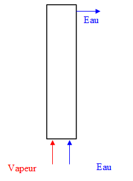
On effectue le bilan simple ci-dessous :
Avec les notations :
- mv : débit massique vapeur en entrée [kg/h]
- Tv : température vapeur en entrée [K]
- mL : débit massique liquide en entrée [kg/h]
- T : température eau en sortie [K]
- TL : température eau en entrée [K]
- L : chaleur latente [J/kg]
- Cp,L : capacité thermique massique du liquide [J/(kg·K)]
Cette approche est testée en l'appliquant à la colonne de l'unité préindustrielle dans les conditions opératoires suivantes :
- Débit massique eau : 65,86 kg/h à TL = 297 K
- Débit massique vapeur : 16,25 kg/h à Tv = 464 K
- Pression colonne : 9 bar
On obtient comme température de l'eau en sortie une valeur de 148 °C par cette approche simplifiée alors que la température mesurée expérimentalement dans ces conditions opératoires est de l'ordre de 170 °C.
A.2 Approche théorique – Discrétisation de la colonne en tranche
Dans cette nouvelle approche, les conditions opératoires utilisées sont les mêmes que celles de la partie précédente.
A.2.1 Bilan thermique sur chacune des phases
Dans cette approche, un bilan thermique est écrit pour chacune des phases en discrétisant la colonne en éléments de volume élémentaire construits sur la section d'écoulement de hauteur dz (figure A.2).
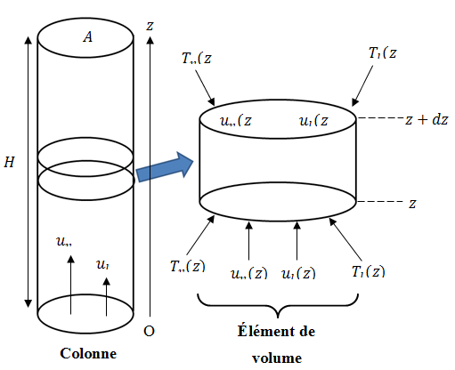
À partir de ces bilans, il est possible d'accéder au profil de température de chacune des phases le long de la colonne. On considère une colonne cylindrique de hauteur H et de section constante A. En notant α la fraction volumique de la phase dispersée, le bilan thermique pour chacune des phases s'écrit en régime permanent.
Pour la phase continue :
Pour la phase dispersée :
avec dΦv→l et dΦl→v les termes de transferts de chaleur entre les phases. Chacun d'eux comprend un terme interfacial lié à la différence de température entre les deux phases et un terme interfacial lié aux transferts de matière dus aux changements de phase :
où :
- h est le coefficient de transfert à l'interface dû à la différence de températures entre les phases,
- ṁl→v représente le transfert de masse du liquide vers la vapeur (évaporation),
- ṁv→l représente le transfert de masse de la vapeur vers le liquide (condensation),
- hlv et hvl sont respectivement les enthalpies massiques du liquide et de la vapeur aux conditions thermiques de l'interface.
A.2.2 Vitesses des phases et fraction volumique de la phase dispersée
Le taux de rétention ou fraction volumique de la phase dispersée s'écrit :
Du taux de rétention et du débit volumique de chacune des deux phases, on détermine les vitesses absolues moyennes des deux phases uv et ul :
On définit la vitesse relative de la phase dispersée par rapport à la phase continue :
et le flux volumique de diffusion :
Aux forts débits de phase dispersée, le diamètre de bulle est donné par :
La résolution de l'équation du mouvement d'une particule rigide soumise à la gravité et à la force de traînée donne la vitesse limite :
Le coefficient de traînée est fonction du nombre de Reynolds de la particule :
Le modèle monodimensionnel de Wallis relie la densité de flux de diffusion au taux de rétention :
D'après Wallis, l'indice n est voisin de 2 pour les écoulements de bulles dans un liquide. Le diagramme de Wallis est représenté sur la figure A.3 dans les conditions opératoires étudiées. La valeur α = 0,22 est obtenue dans ces conditions.
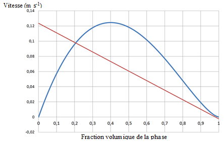
A.2.3 Transferts thermiques à l'interface
Le coefficient de transfert à l'interface h est donné par la relation :
où λl est la conductivité thermique du liquide et Nu le nombre de Nusselt. Le nombre de Nusselt est donné par la corrélation de Hughmark :
où Reb est le nombre de Reynolds de bulle et Pr le nombre de Prandtl de la phase liquide.
Les relations donnant les transferts de masse dus à l'évaporation et à la condensation sont basées sur le modèle de Lee :
- Transfert de masse par évaporation : si Tl ≥ Tsat alors ṁl→v = Ce ρl (1−α) (Tl−Tsat)/Tsat ; sinon ṁl→v = 0
- Transfert de masse par condensation : si Tv ≤ Tsat alors ṁv→l = Cc ρv α (Tsat−Tv)/Tsat ; sinon ṁv→l = 0
Les coefficients Ce et Cc sont homogènes à des temps de relaxation (en s⁻¹). Les valeurs utilisées sont Ce = Cc = 0,1.
A.2.4 Résultats et conclusions
Le système de deux équations différentielles ordinaires est résolu sous le logiciel MATLAB. Les valeurs des températures aux frontières sont Tl(z=0) = 24 °C et Tv(z=0) = 175 °C. Les températures de la vapeur et du liquide en fonction de la cote z obtenues après résolution sont présentées sur les figures A.4 et A.5.
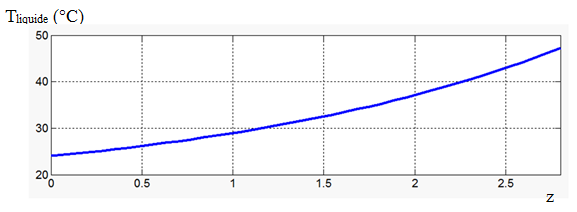
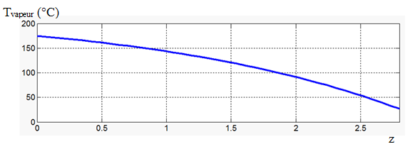
Sur les deux figures précédentes, on observe que l'augmentation de la température du liquide est de 25 °C alors que la diminution de la température de la vapeur est beaucoup plus importante : une diminution de 150 °C.
Les hypothèses utilisées dans ce modèle unidimensionnel – taux de rétention de la phase vapeur constant et vitesses des deux phases constantes – sont trop restrictives. Pour améliorer le modèle, il faudrait au moins prendre en compte l'équation d'évolution du taux de rétention de la vapeur voire intégrer dans le système d'équations à résoudre les équations de conservation de quantité de mouvement des deux phases pour obtenir l'évolution des vitesses de chacune des deux phases en fonction de la cote z.
Annexe B — Perspectives pour une amélioration du modèle
B.1 Problématiques physiques et amélioration possible du modèle actuel
Ci-dessous sont listées les problématiques physiques ainsi que les simplifications effectuées au niveau du modèle de la colonne d'injection utilisé dans cette étude, avec avis d'experts :
- en vert, les aspects du modèle acceptables selon les experts,
- en rouge, les points sur lesquels les experts émettent un doute ou un bémol et préconisent une amélioration.
B.2 Recommandations par rapport au modèle actuel
En l'état actuel du modèle, il est possible d'effectuer 2 types de simulations afin de décorréler les aspects écoulements diphasiques turbulents et les aspects thermiques dus aux phénomènes de condensation :
- S'assurer de la convergence du calcul de l'écoulement diphasique turbulent (géométries pilotes et industrielles) sans utiliser le module d'évaporation-condensation (calculs froids). Déterminer des résidus seuils (impact de la turbulence) et le pourcentage du bouclage du bilan matière.
- S'assurer de la convergence du module d'évaporation-condensation seul pour un écoulement très simple, par exemple laminaire en géométrie simple. Déterminer des résidus seuils et vérifier le bouclage du bilan matière.
En outre, la distribution de tailles des bulles, leur forme et leur comportement est une question clef du problème. Pour pallier à ce manque d'information, une solution serait de réaliser une maquette froide (sans évaporation et condensation) avec un fluide représentatif de boues pour mesurer les tailles de bulles et déterminer leur forme générale selon leur diamètre (sphérique, ellipsoïde, calotte) :
- Caractérisation du paramètre clef : la bulle,
- Donnera accès à la force de traînée et l'aire interfaciale, deux grandeurs fondamentales du problème qui influencent les transferts de matière,
- Vérifier les calculs Fluent diphasiques froids, rendus plus ou moins turbulent selon les débits d'injection considérés.
Une alternative à la réalisation de ce pilote (colonne transparente pour les mesures de tailles et de formes de bulles sous pression de l'ordre de 10–12 bar) est de réaliser un calcul direct (DNS) à l'aide d'un logiciel comme GERRIS.
B.3 Roadmap de modélisation
- Une approche Euler-Euler est à privilégier pour sa simplicité.
- Une approche de type k-ε est à privilégier pour les boues, avec des corrélations spécifiques pour sa rhéologie particulière.
- Les bulles de vapeur réduiront de taille à mesure de leur condensation, une approche de type bilan de population pourrait représenter à la fois la variabilité de taille des bulles à l'entrée du réacteur et la réduction de cette taille à mesure que le temps de résidence de la bulle augmente dans le réacteur.
- Deux voies peuvent être envisagées : discrétiser le bilan de population et traiter la phase gaz comme plusieurs phases eulériennes de grandeur caractéristique différente, ou transporter les moments de la distribution de taille des bulles dans des équations de transport classiques.
- La première solution est plus « physique » et permet de garder une interprétation directe du modèle ; la seconde solution rend l'interprétation des résultats indirecte et nécessite un important travail de mise en équation.
Par ailleurs, le transfert de matière principal dans ce système est la condensation de l'eau des bulles dans les boues. L'échange de chaleur peut être représenté par un modèle simple double film avec des coefficients de transfert de chaleur déduits de l'analogie de Chilton-Colburn. Le phénomène thermique majoritaire est la condensation de la vapeur saturée injectée dans de la boue froide : en supposant le régime permanent, la vapeur ne peut que céder de la chaleur aux boues et donc condenser.
Annexe C — Modélisation d'un injecteur statique alternatif
C.1 Configurations étudiées et conditions opératoires
C.1.1 Géométrie de la colonne et conditions opératoires
Les dimensions de la colonne d'injection sont représentées sur la figure C.1. Cinq dispositifs d'injection ont été étudiés :
- Dispositif d'injection initial
- Dispositif d'injection Couronne 1
- Dispositif d'injection Couronne 2
- Dispositif d'injection de type Komax
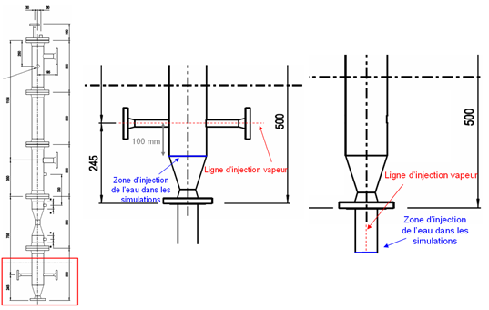
À l'exception de la simple canne d'injection, tous les dispositifs sont situés sur la même ligne d'injection de vapeur. Les cinq dispositifs ont été étudiés dans les mêmes conditions opératoires :
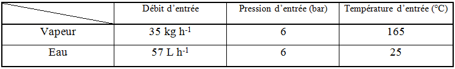
Le dispositif d'injection « initial » comporte dix trous de 2 mm de diamètre. Afin de comparer l'efficacité des différents types d'injection dans les mêmes conditions hydrodynamiques, tous les dispositifs (exceptés les types Komax et l'injecteur initial) possèdent 10 trous de 2 mm de diamètre.
C.1.2 Autres dispositifs d'injection de vapeur étudiés
Dispositif d'injection Couronne 1 — Ce dispositif situé en aval de l'arrivée des boues est constitué d'un tube d'injection de vapeur central terminé par un cône comprenant des trous d'injection et d'un module oblong impacté par la vapeur.
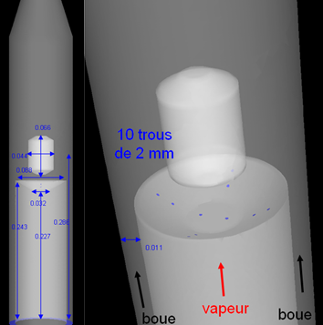
Dispositif d'injection Couronne 2 — Ce dispositif situé en aval de l'arrivée des boues est constitué d'une couronne de trous d'injection de vapeur et d'un module oblong impacté par la vapeur.
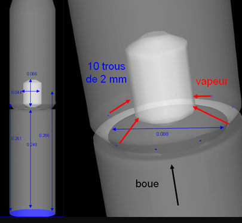
Dispositif initial d'injection — Ce dispositif utilisé initialement sur la colonne du premier test de préfaisabilité comprend un injecteur DN15 situé dans l'arrivée des boues (DN40).
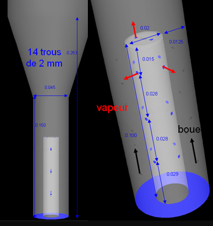
Dispositif d'injection de type Komax — Le dispositif d'échange de chaleur par contact direct Komax, breveté et commercialisé par la société Komax Systems, est constitué d'un tube d'injection de vapeur central et d'un module comprenant un obstacle oblong.
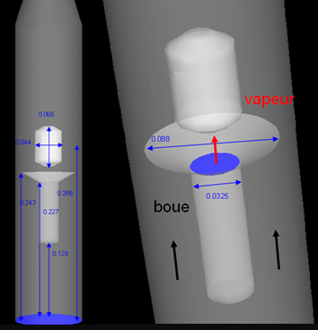
C.2 Résultats
Ces résultats sont obtenus avec le modèle d'évaporation-condensation standard de Fluent, sans customisation. Les résultats obtenus permettent de comparer de façon qualitative les cinq dispositifs d'injection étudiés.
C.2.1 Champs de température de la phase vapeur
La figure C.6 représente les champs de température de la phase vapeur dans une section verticale de la colonne passant par le centre du tube de sortie. Dans le modèle d'évaporation-condensation utilisé, la seule force motrice prise en compte est la différence de température : plus le gradient de température est grand, plus le transfert de matière par condensation est important.
On observe que les configurations « Couronne 2 » et Komax présentent des gradients de températures plus importants que les autres configurations dans la partie basse de la colonne (zone d'injection). La figure C.7 (zoom sur la zone d'injection) permet d'observer plus nettement ces différences entre les injecteurs.
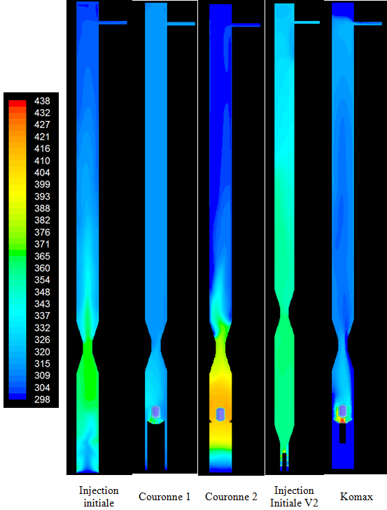
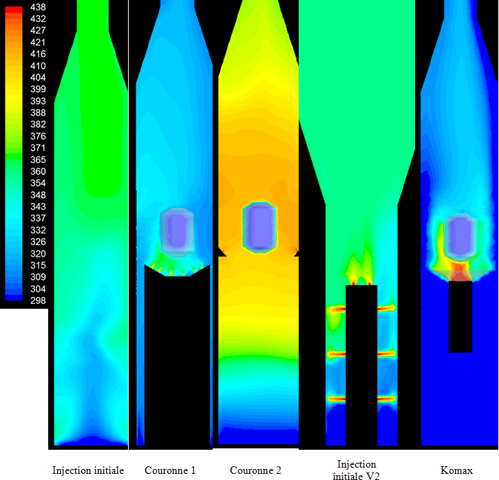
C.2.2 Iso-surfaces de fraction volumique de vapeur
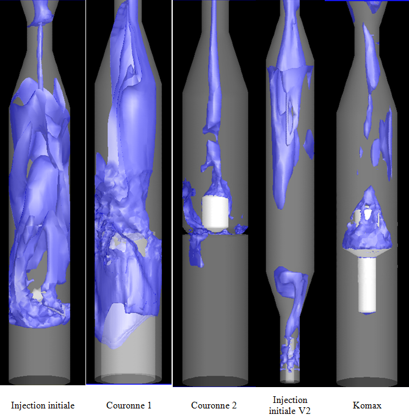
Pour les dispositifs « Couronne 2 » et Komax, les poches de vapeur atteignant la partie haute de la colonne sont de dimensions moindres que dans les autres configurations. Ceci confirme les premières constatations effectuées au vu des températures à savoir que les phénomènes de condensation sont plus importants pour ces deux configurations.
C.2.3 Conclusion
Cette étude intermédiaire a permis de modéliser cinq dispositifs d'injection de vapeur dans la colonne du prototype à l'aide d'Ansys-Fluent et son modèle d'évaporation/condensation. En l'état, ce modèle ne peut apporter que des réponses qualitatives quant à l'efficacité d'un dispositif d'injection. Il permet toutefois de donner des tendances et de comparer qualitativement différents dispositifs.
On observe pour les configurations « Couronne 2 » et Komax :
- Des gradients de températures plus importants que dans les autres configurations dans la partie basse de la colonne (zone d'injection),
- Des poches de vapeur atteignant la partie haute de la colonne de dimensions moindres que dans les autres configurations.
Ces éléments permettent de conclure que les phénomènes de condensation sont plus importants pour ces deux configurations. La présence d'un module solide, sur lequel la vapeur impacte, a un effet positif sur les phénomènes de condensation.
Cependant, le modèle en l'état sous Fluent ne donnera toujours que des résultats qualitatifs. Il est nécessaire de développer et valider un modèle d'évaporation/condensation pour obtenir des résultats quantitatifs et ainsi pouvoir correctement dimensionner des dispositifs d'injection.